Fenrir: as 4 cores nas 3 visões
Build r1044, teste automático fenrir-fx (passou). Raios e plasma presos à montaria, com a cor de cada variante.
Para você aprovar: o tamanho dos choques no remoto e na seleção ficou bom? As cores estão certas? Se algo estiver forte ou fraco demais, diga qual.
Vermelho
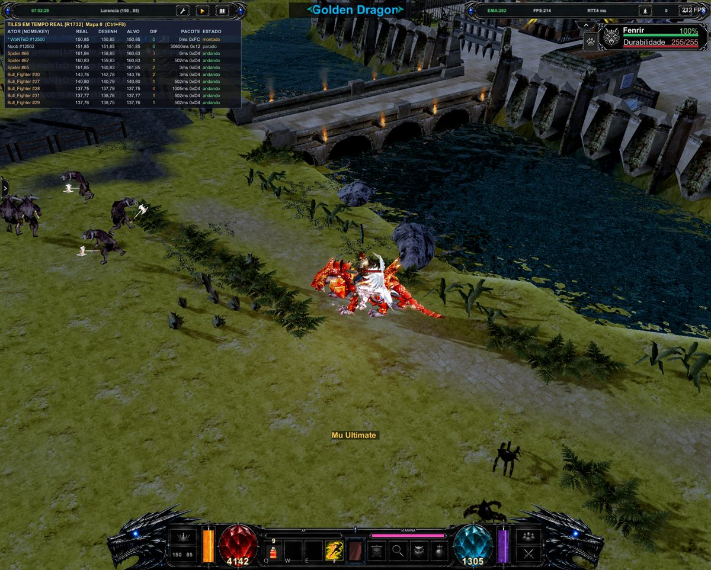
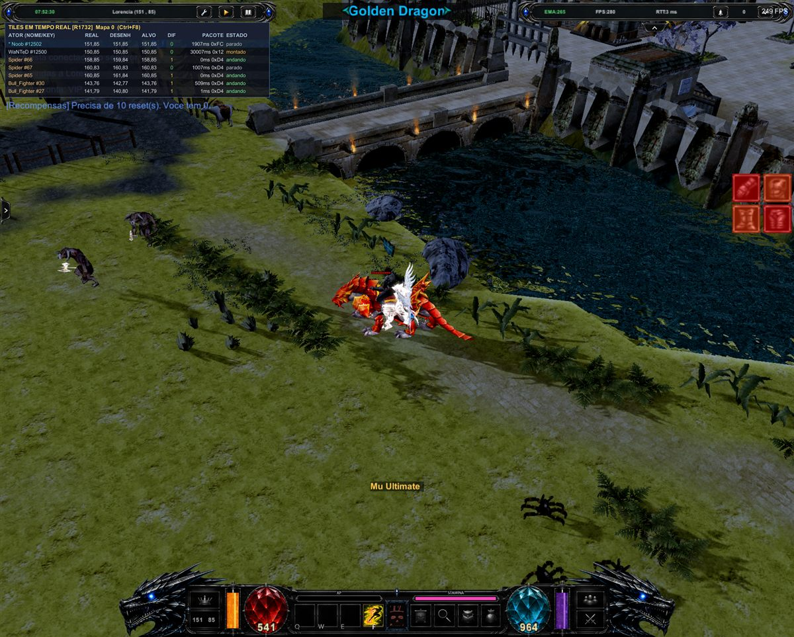
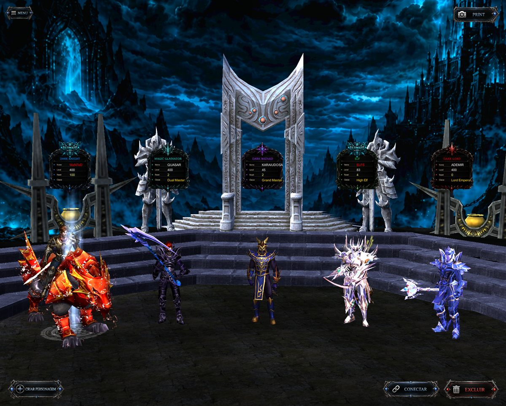
Azul
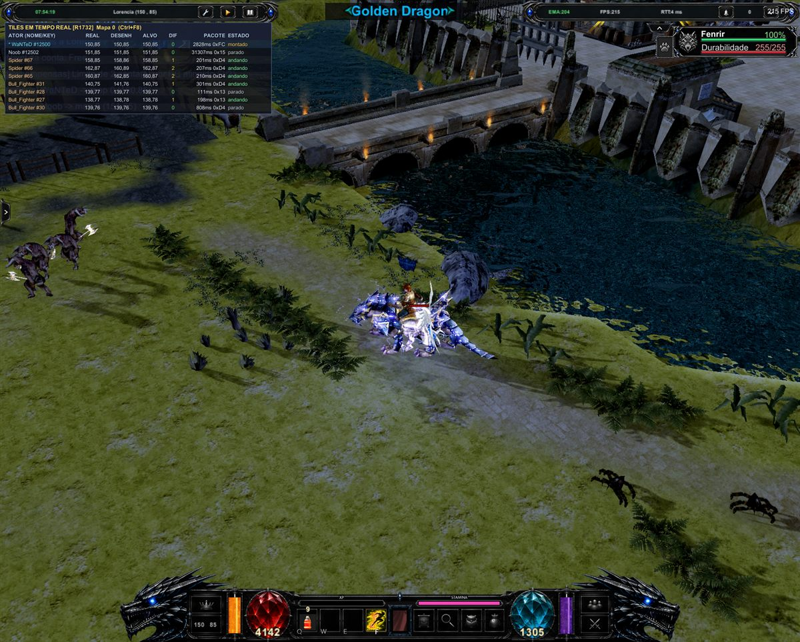
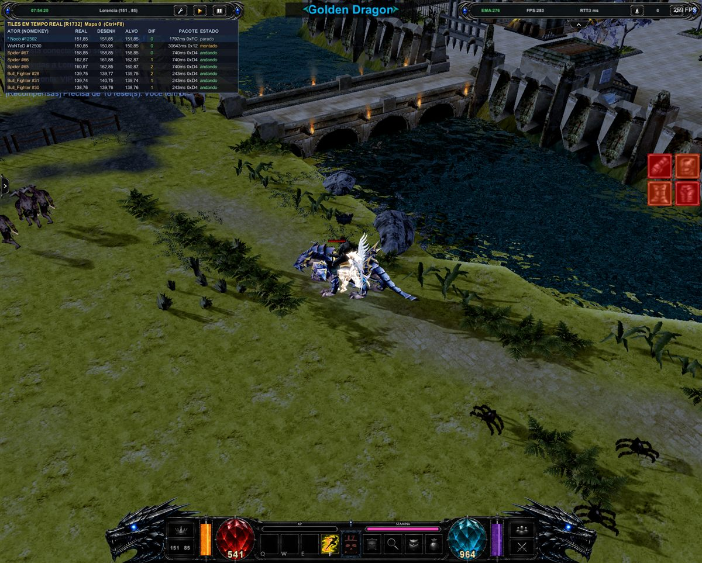
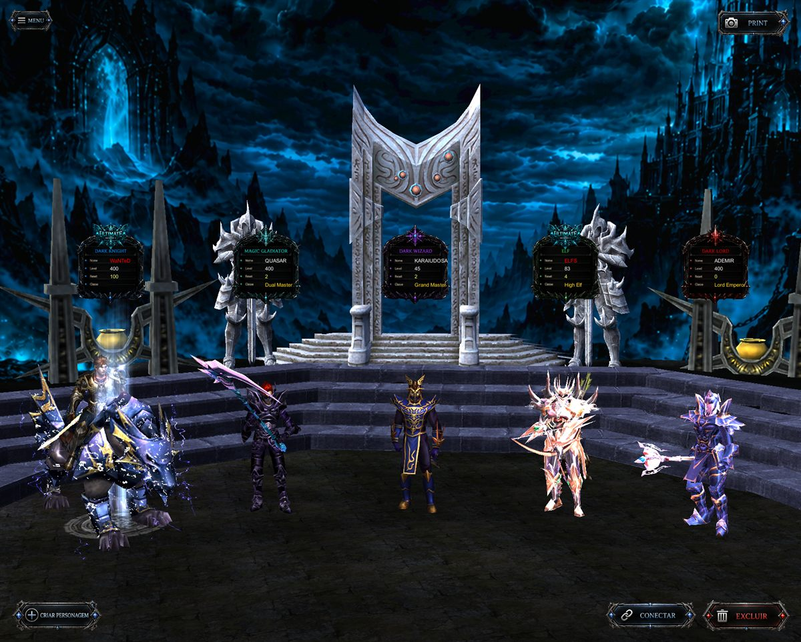
Preto
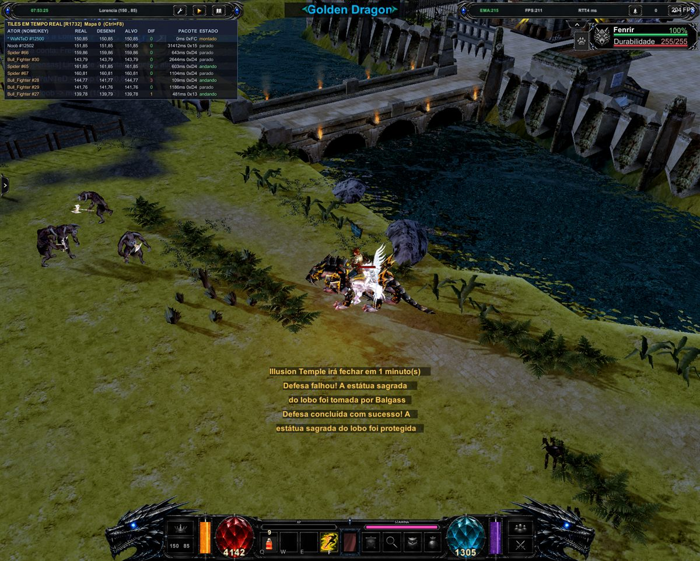
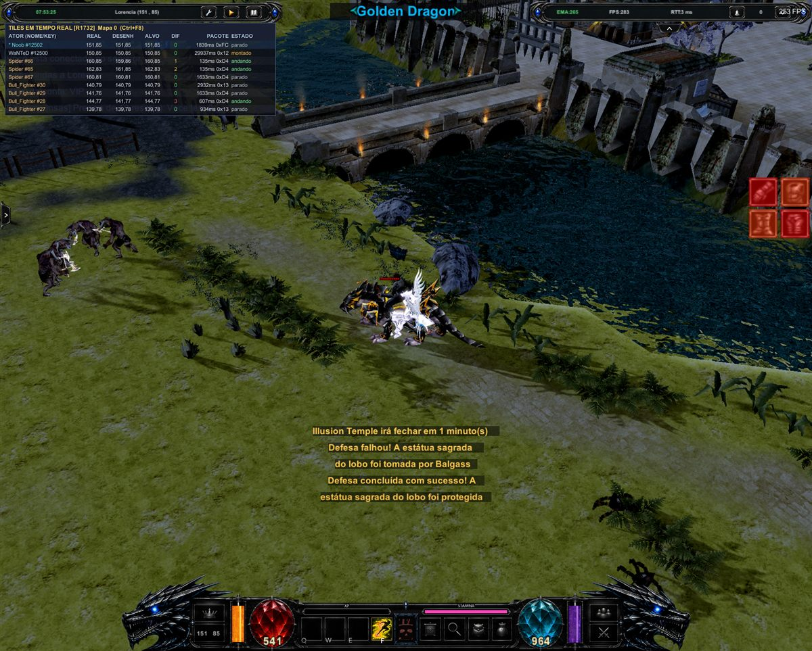
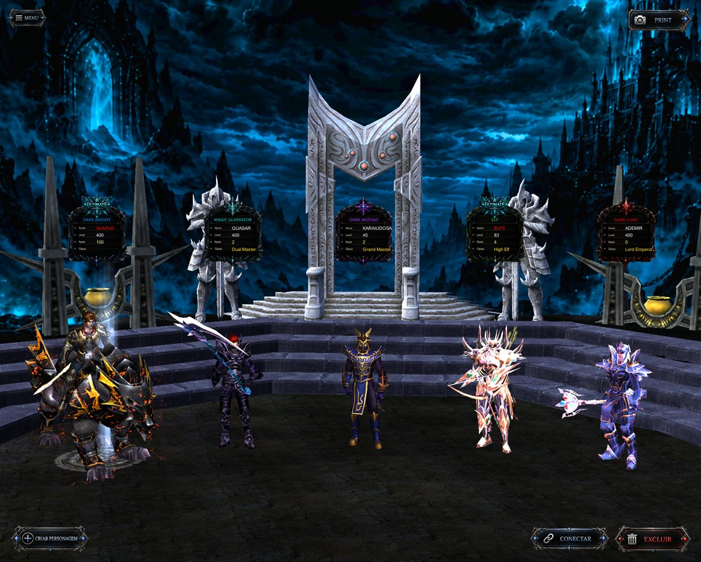
Dourado
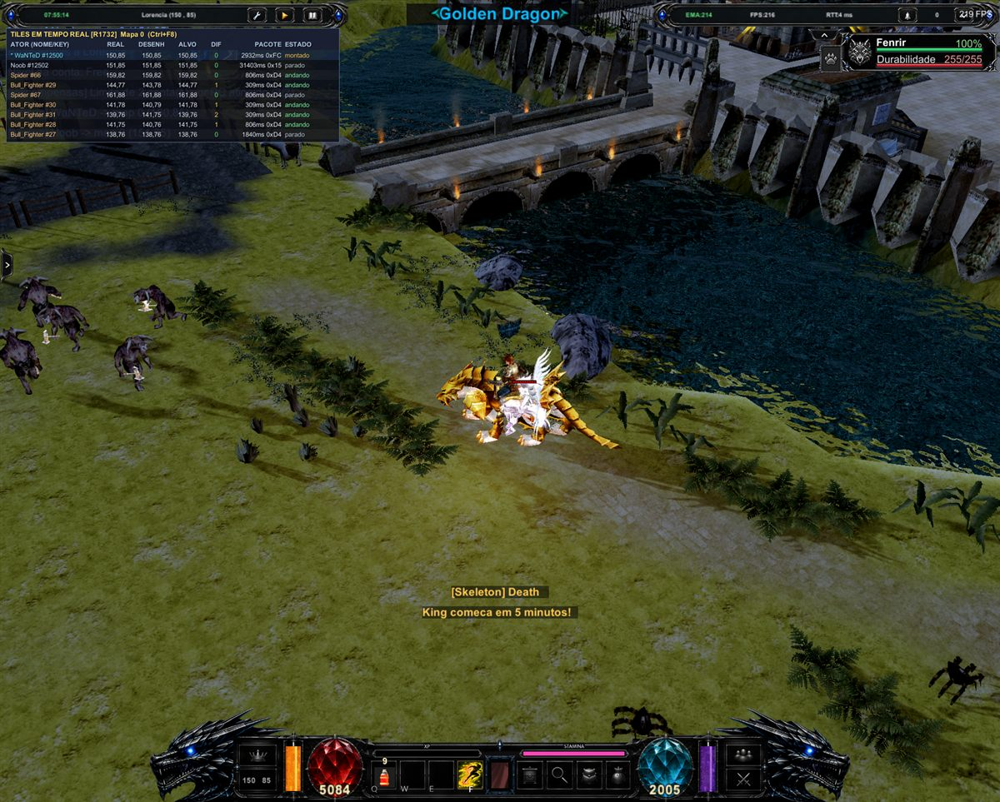
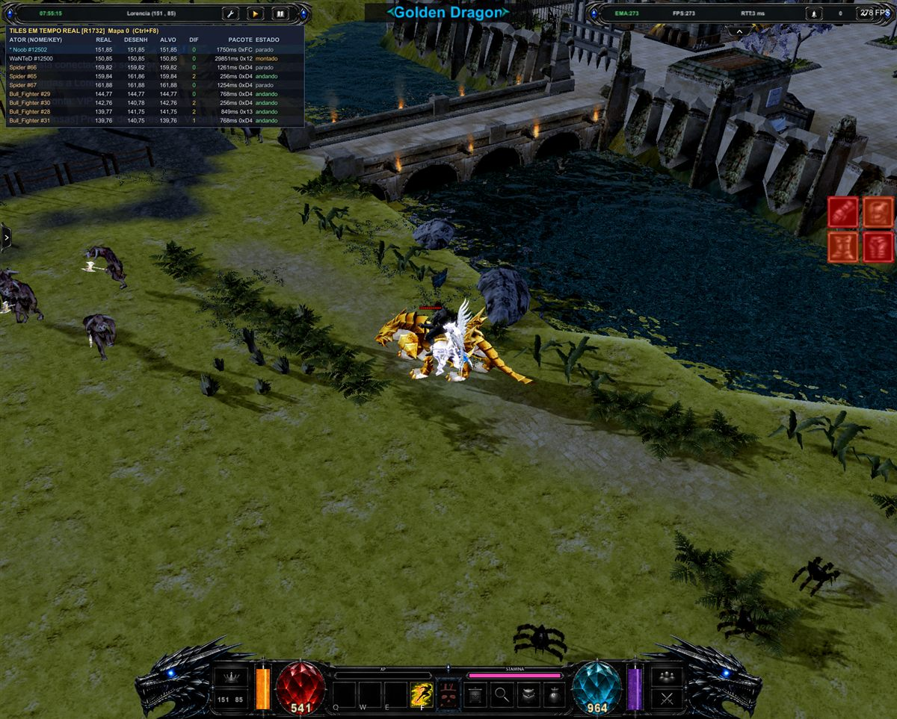
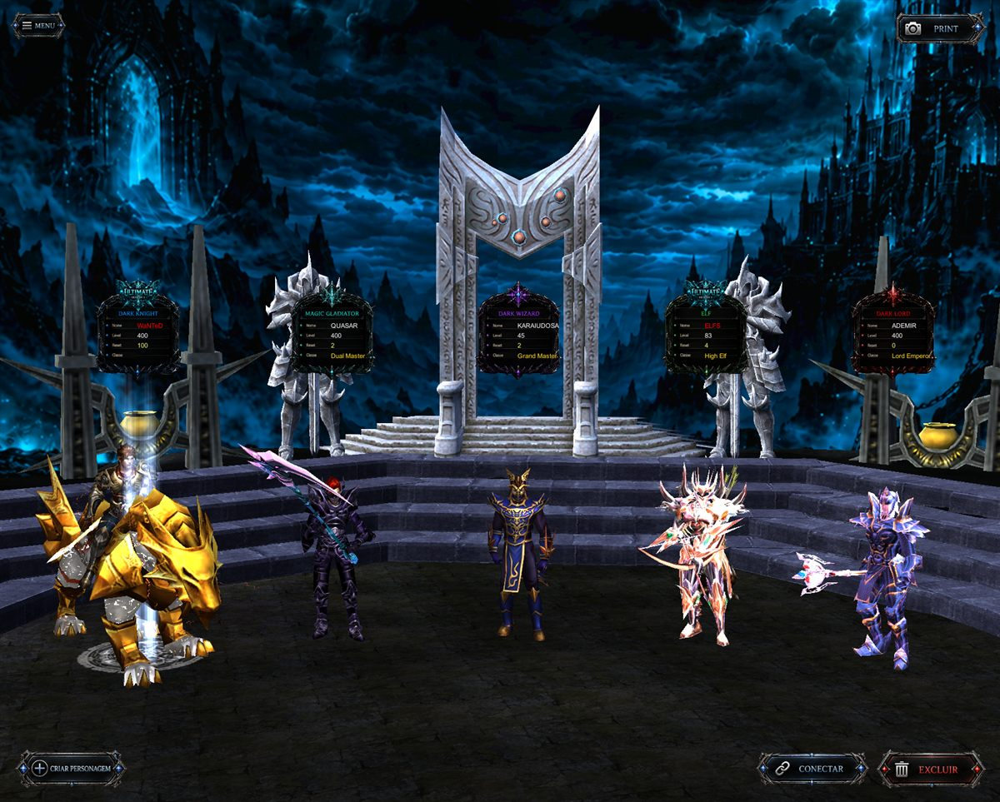